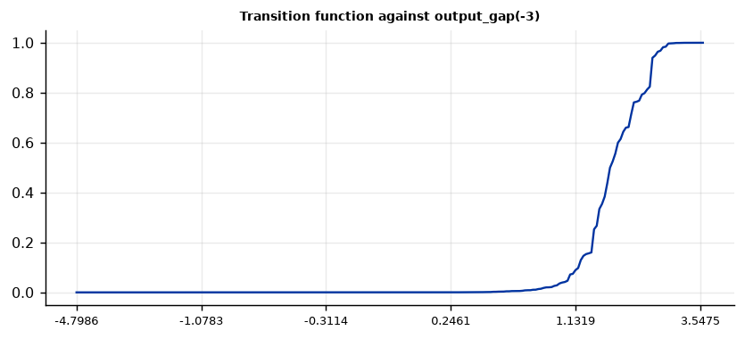
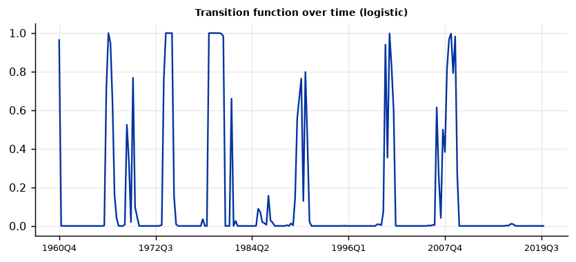

Run this model on your own data in Open Econometric Systems →
Step 1The question and the model
Do the coefficients depend on the level of a state variable, and how fast do they move? In a smooth-transition regression
the transition function \(G\) rises from 0 to 1 as the transition variable \(s_t\) moves through a range. In the logistic form (LSTAR), \(G = 1/\{1+\exp[-\gamma (s_t-c)/\sigma_s]\}\): the regimes at low and high \(s_t\) differ, and \(c\) is where they are halfway between. In the exponential form (ESTAR), \(G = 1-\exp[-\gamma (s_t-c)^2/\sigma_s^2]\): the two outer regimes are alike and differ from the middle. The slope parameter \(\gamma\) (scaled by the standard deviation of \(s_t\)) sets the speed. As \(\gamma\to\infty\) the logistic form becomes the threshold model of the threshold regression guide.
A linear model is nested in two ways, \(\theta=0\) or \(\gamma=0\), so the usual tests do not apply. Teräsvirta (1994) replaces \(G\) by a third-order Taylor approximation, which turns the linearity test into an F test, and the pattern of rejections chooses between LSTAR and ESTAR. Given \(\gamma\) and \(c\), the model is linear in the other coefficients, so estimation concentrates the sum of squares on \((\gamma, c)\), searches a grid and polishes with a simplex search.
Four checks before you trust a smooth-transition model
- Is linearity rejected for the transition variable you use? If not, the nonlinear estimates are not determined. Try the candidate variables and delays and report the search.
- Is \(\gamma\) estimated away from its limits? A very large \(\gamma\) means an abrupt switch, and its standard error is unreliable because the likelihood is almost flat. A very small \(\gamma\) makes the model a polynomial in \(s_t\), with no meaningful location.
- Does the location \(c\) lie inside the data and away from the edge of its range? It is searched between the 10th and 90th percentiles of \(s_t\), so that both regimes have observations.
- Are the residuals clean? Remaining serial correlation means the dynamics are too short. Add lags before interpreting the regimes.
How to write it: the model
We estimate a nonlinear monetary policy rule with a smooth-transition regression (Teräsvirta 1994). The federal funds rate depends on its own lag, inflation and the output gap, and all coefficients, including the intercept, move with a logistic function of the output gap lagged three quarters. The transition function has a speed \(\gamma\) and a location \(c\). We test linearity with Teräsvirta's third-order Taylor approximation for every candidate transition variable and delay, choose the logistic or the exponential form by the sequence of tests, estimate \(\gamma\) and \(c\) by nonlinear least squares on 237 quarterly observations from 1960 to 2019, and report Newey–West standard errors.
Step 2Load the data and look at the series
import numpy as np
import pandas as pd
import oes_engine as oes # pip install -e open-econometric-systems/oes-engine
from statsmodels.tsa.stattools import adfuller
data = open("taylor.csv").read()
df = pd.read_csv("taylor.csv")
print(df.date.iloc[0], "to", df.date.iloc[-1], "|", len(df), "quarters")
print(df[["fedfunds", "inflation", "output_gap"]].describe().round(2).loc[["mean", "std", "min", "max"]])
print(df[["fedfunds", "inflation", "output_gap"]].corr().round(2))
print(f"ADF p, federal funds rate = {adfuller(df.fedfunds, autolag='AIC')[1]:.3f}")1960Q1 to 2019Q4 | 240 quarters
fedfunds inflation output_gap
mean 4.99 3.20 -0.02
std 3.65 2.19 1.43
min 0.07 0.13 -4.80
max 17.78 10.46 3.72
fedfunds inflation output_gap
fedfunds 1.00 0.76 0.20
inflation 0.76 1.00 0.03
output_gap 0.20 0.03 1.00
ADF p, federal funds rate = 0.330How to read it
The sample runs from 1960Q1 to 2019Q4 (240 quarters). The federal funds rate averages 4.99% with a standard deviation of 3.65 and ranges from 0.07% to 17.78%. Inflation averages 3.20% (standard deviation 2.19). The output gap averages about zero (standard deviation 1.43) and runs from −4.80 to 3.72 points, so large positive gaps are rare. The funds rate is correlated with inflation (0.76) and weakly with the output gap (0.20), and it is persistent (ADF p = 0.33), so a lag of the funds rate is included to capture interest-rate smoothing.
Step 3Test linearity and choose the transition variable and the delay
spec = dict(y="fedfunds", x=["inflation", "output_gap"], time="date", ar_lags=1, form="auto", trim="0.10")
rows = []
for sv in ["output_gap", "inflation"]:
for d in [1, 2, 3, 4]:
rr = oes.run("str", data, dict(spec, transition=sv, delay=d))
lin = [t for t in rr["tables"] if t["title"].startswith("Linearity")][0]["rows"][0]
s = {x["label"]: x["value"] for x in rr["summary"]}
rows.append((sv, d, lin[1], lin[2], s["Transition function"], s["gamma"], s["c"], s["AIC gain over linear"]))
print(pd.DataFrame(rows, columns=["transition", "delay", "F", "p", "form", "gamma", "c", "AIC gain"]).to_string(index=False))transition delay F p form gamma c AIC gain output_gap 1 2.645 0.0025 logistic 1.388 0.6613 11.25 output_gap 2 3.398 0.0001 logistic 3.025 1.4302 16.95 output_gap 3 4.728 0.0000 logistic 10.022 1.4656 57.43 output_gap 4 2.854 0.0011 logistic 108.469 1.6477 17.57 inflation 1 6.123 0.0000 logistic 0.100 6.5359 15.74 inflation 2 3.001 0.0006 logistic 1.877 6.5469 5.64 inflation 3 2.706 0.0020 logistic 8.291 6.5580 7.28 inflation 4 2.102 0.0178 logistic 499.998 6.4049 5.62
How to read it
Linearity is rejected at 5% for all eight combinations of transition variable and delay, and at 1% for seven. Two things guide the choice. First, the quality of the fit: with the output gap lagged three quarters the AIC gain over the linear model is 57.4, against 11 to 18 for the other output-gap delays and 6 to 16 for inflation. Second, whether the transition is identified. With inflation as the transition variable the slope \(\gamma\) sits at its lower limit of 0.1 for a delay of one quarter (so the model is close to a polynomial in inflation, with a location of 6.5% that carries no meaning) and at its upper limit of 500 for a delay of four. With the output gap at a delay of three quarters, \(\gamma\) is 10.0 and the location is 1.47 points, inside the range of the data. We use the output gap lagged three quarters. The search is exploratory, and the p-values of the linearity tests do not account for it; the size of the AIC gain is the more informative number.
Step 4Estimate the model
spec = dict(y="fedfunds", x=["inflation", "output_gap"], transition="output_gap", time="date", ar_lags=1, delay=3, form="auto", trim="0.10")
r = oes.run("str", data, spec)
oes.summary(r)
oes.show(r, "Linearity tests")
oes.show(r, "Transition function")Observations: 237
Transition variable: output_gap(-3)
Transition function: logistic
Linearity F (all terms): 4.728
Linearity p: 0.0
gamma: 10.022
c: 1.4656
c at the edge of its range: no
R-squared: 0.9661
AIC gain over linear: 57.43
Linearity tests (Terasvirta)
F p-value Restrictions Detail
Test
H0: linear (all nonlinear terms zero) 4.728 0.0000 12
H04: third-order terms zero 3.049 0.0179 4
H03: second-order terms zero, given third zero 3.348 0.0110 4
H02: first-order terms zero, given higher zero 7.105 0.0000 4
Note: Terasvirta's (1994) sequence: if the second-order test (H03) has the smallest p-value among the three, the exponential form is chosen; otherwise the logistic form. Here the rule chooses logistic.
Transition function (logistic)
Estimate Std. error t
Parameter
gamma (smoothness, per s.d. of the transition variable) 10.0224 7.5129 1.33
c (location, in units of output_gap(-3)) 1.4656 0.1562 9.38
Note: Standard errors are robust (Newey-West) and rely on a Gauss-Newton approximation. A large gamma makes the transition abrupt and its standard error unreliable, because the likelihood is almost flat in gamma; the location c is then the better-identified quantity.How to read it
The linearity test rejects strongly: F = 4.73 for the 12 restrictions, p < 0.0001. In the sequence that chooses the form, the first-order test (H02) has the smallest p-value (below 0.0001, against 0.011 for H03 and 0.018 for H04), so the rule chooses the logistic form. The speed \(\gamma\) is 10.0 (standard error 7.5, so it is not precisely estimated, as expected when the transition is quick) and the location is \(c = 1.47\) output-gap points (standard error 0.16, t = 9.4). A \(\gamma\) of 10 means that the transition function rises from about 0.12 to 0.88 as the lagged output gap moves through about half a point around 1.47, which is roughly one standard deviation above the mean gap. So the switch is quick but not a step.
Step 5The coefficients in the two regimes
oes.show(r, "Coefficients")
imp = [t for t in r["tables"] if t["title"].startswith("Coefficients in the two")][0]["rows"]
val = {row[0]: (float(row[1].split()[0]), float(row[2].split()[0])) for row in imp}
for k, name in enumerate(["low output gap (G = 0)", "high output gap (G = 1)"]):
print(f"Long-run response of the funds rate to inflation, {name}: {val['inflation'][k] / (1 - val['fedfunds(-1)'][k]):.2f}")Coefficients
Linear part (G = 0) p-value Nonlinear part (G = 1 adds) p-value
Variable
const 0.1756 (0.1032) 0.0903 -0.3787 (0.5893) 0.5211
fedfunds(-1) 0.9629 (0.0206) 0.0000 -0.5822 (0.2659) 0.0296
inflation 0.0254 (0.0412) 0.5382 0.9023 (0.375) 0.0169
output_gap 0.2678 (0.0309) 0.0000 0.0348 (0.1444) 0.8100
Note: The coefficient at transition value G is the linear part plus G times the nonlinear part. Robust standard errors in parentheses.
Coefficients in the two extreme regimes
G = 0 (low output_gap(-3)) G = 1 (high output_gap(-3))
Variable
const 0.1756 (0.1032) -0.2031 (0.5617)
fedfunds(-1) 0.9629 (0.0206) 0.3808 (0.2606)
inflation 0.0254 (0.0412) 0.9277 (0.3759)
output_gap 0.2678 (0.0309) 0.3026 (0.137)
Note: G = 0 and G = 1 are the limits of the transition function; most observations lie between them.
Long-run response of the funds rate to inflation, low output gap (G = 0): 0.68
Long-run response of the funds rate to inflation, high output gap (G = 1): 1.50How to read it
The linear part is the regime when the lagged output gap is low (G = 0) and the nonlinear part is what high gaps add. When the gap was low, the funds rate adjusts slowly (coefficient on its lag 0.963, standard error 0.021), does not respond to inflation (0.025, 0.041) and responds to the output gap with 0.268 (0.031). When the gap was high (G = 1), the lag coefficient falls to 0.381 (0.261), the response to inflation rises to 0.928 (0.376) and the response to the gap is 0.303 (0.137). The changes in the lag and inflation coefficients are significant at 5% (p = 0.030 and 0.017). The changes in the intercept and the output-gap coefficient are not (p = 0.52 and 0.81). The long-run response of the funds rate to inflation, the inflation coefficient divided by one minus the lag coefficient, is 0.68 in the low regime and 1.50 in the high regime. The second is above 1, the Taylor principle, so the rule is stabilising only after a boom. The first should be read with care, because it divides a small coefficient by a number near zero. The high regime rests on few observations, so its standard errors are wide.
Step 6Fit, residuals and the transition over time
oes.show(r, "Fit against the linear model")
oes.show(r, "Residual diagnostics")
oes.plot(r, "Transition function against", ncols=1, size=(6.5, 3))
oes.plot(r, "Transition function over time", ncols=1, size=(6.5, 3))Fit against the linear model
SSR Residual std. dev. AIC BIC
Model
Linear 144.2935 0.7869 -109.602 -95.73
Smooth transition (logistic) 107.6517 0.6886 -167.031 -132.35
Note: AIC and BIC count gamma and c as parameters. Lower is better.
Residual diagnostics
Statistic p-value Detail
Test
Ljung-Box serial correlation (4 lags) 15.7161 0.0034 H0: no serial correlation

How to read it
The smooth-transition model lowers the sum of squared residuals from 144.3 to 107.7 and the residual standard deviation from 0.787 to 0.689. AIC falls from −109.6 to −167.0 and BIC from −95.7 to −132.4, so both criteria prefer it even after counting \(\gamma\) and \(c\). The Ljung–Box test rejects no serial correlation (statistic 15.7, p = 0.003), so the dynamics are not fully captured with one lag; the AR(2) variant below gives the same \(\gamma\) and location, so the main result does not depend on it, but the standard errors should be treated with care. The first chart shows the transition function: it is zero for output gaps below about 0.9, rises between about 1.1 and 2.5 and is one above that. The second chart shows it over time. It is at or near zero most of the time and rises only in booms: the mid-1960s, the early 1970s, around 1979–1980, around 1990, in 2000 and in 2006–2007. It is zero throughout the 2010s.
Step 7Does the answer depend on the form, the lags, the delay and the range?
out = {}
variants = {"baseline (LSTAR, AR(1), delay 3)": {}, "ESTAR": dict(form="exponential"), "AR(2)": dict(ar_lags=2),
"delay 2": dict(delay=2), "delay 4": dict(delay=4), "range for c: 5th to 95th": dict(trim="0.05"),
"range for c: 15th to 85th": dict(trim="0.15"), "range for c: 20th to 80th": dict(trim="0.20")}
for name, v in variants.items():
rr = oes.run("str", data, dict(spec, **v))
s = {x["label"]: x["value"] for x in rr["summary"]}
out[name] = (s["Transition function"], s["gamma"], s["c"], s["c at the edge of its range"], s["R-squared"], s["AIC gain over linear"])
print(pd.DataFrame(out, index=["form", "gamma", "c", "c at edge", "R-squared", "AIC gain"]).T.to_string())form gamma c c at edge R-squared AIC gain baseline (LSTAR, AR(1), delay 3) logistic 10.022 1.4656 no 0.9661 57.43 ESTAR exponential 10.424 1.6457 yes 0.9623 32.37 AR(2) logistic 10.48 1.5 no 0.9665 57.07 delay 2 logistic 3.025 1.4302 no 0.9597 16.95 delay 4 logistic 108.469 1.6477 yes 0.9598 17.57 range for c: 5th to 95th logistic 10.022 1.4656 no 0.9661 57.43 range for c: 15th to 85th logistic 10.225 1.4511 yes 0.9661 57.41 range for c: 20th to 80th logistic 15.546 1.143 yes 0.9646 47.37
How to read it
The baseline results hold across the variants that are well behaved. With two lags of the funds rate the speed is 10.5, the location is 1.50 and the AIC gain is 57.1. Widening the range for \(c\) to the 5th to 95th percentiles changes nothing, because the baseline location (1.47) is inside the range. The variants that change the answer are flagged in the table. A narrower range for \(c\) (15th to 85th and 20th to 80th) puts the location on the edge of the range (1.45 and 1.14), which shows the range is cutting off the best location. The exponential form, imposed by hand, also ends on the edge of its range (1.65) and its AIC gain is 32.4, well below the logistic 57.4. A delay of four puts \(c\) on the edge with \(\gamma\) above 100, and a delay of two gives a slower transition (\(\gamma = 3.0\)) but an AIC gain of only 17.0. The delay of three quarters, the logistic form and a location of about 1.5 points are what the data support.
Step 8Smooth or abrupt? Compare with the threshold regression
th = oes.run("tar", data, dict(y="fedfunds", x=["inflation", "output_gap"], threshold="output_gap", time="date",
ar_lags=1, delay=3, boot=499, max_thresholds="1"))
oes.show(th, "Tests for a threshold")
oes.show(th, "Estimated thresholds")
oes.show(th, "Fit against the linear model")Tests for a threshold
Statistic Bootstrap p-value 5% critical value Detail
Test
Linearity against one threshold (sup-F) 72.941 0.018 59.042 499 bootstrap draws
Note: The threshold is not identified under the null of linearity, so the F statistic does not follow an F distribution. The p-value comes from Hansen's (1996) fixed-regressor bootstrap.
Estimated thresholds
Estimate 95% confidence interval Observations at or below Observations above
Threshold
1 1.3793 1.2202 to 1.4299 199 38
Note: The interval collects every candidate threshold whose likelihood-ratio statistic is below 7.35 (Hansen 2000). It is often wide and can be asymmetric.
Fit against the linear model
SSR Residual std. dev. AIC
Model
Linear 144.2935 0.7869 -109.602
Threshold (2 regimes) 109.4359 0.6913 -165.135
Note: AIC counts the thresholds as parameters. A lower value favours the threshold model.How to read it
The threshold regression with the same specification and the same delay rejects linearity (sup-F = 72.9, bootstrap p = 0.018 with 499 draws, 5% critical value 59.0). It places the threshold at 1.38 (95% interval 1.22 to 1.43), with 38 of 237 observations above it. Its fit is almost the same as the smooth model: a sum of squared residuals of 109.4 against 107.7, and an AIC of −165.1 against −167.0. The data therefore cannot separate an abrupt switch from a quick smooth one, which agrees with the wide standard error of \(\gamma\). Both place the switch at an output gap of about 1.4 to 1.5 points. Choose the threshold model if you want a simple statement (a rule that changes at a level), and the smooth-transition model if you want to show how the response changes through the range.
Step 9Write the results
How to write it: results
We find that the response of U.S. monetary policy to inflation depends on the state of the cycle. The federal funds rate is modelled with a logistic smooth-transition regression on its own lag, inflation and the output gap, with all coefficients moving with the output gap lagged three quarters. Teräsvirta's linearity test rejects strongly (F = 4.73, p < 0.0001) and the sequence of tests selects the logistic form. The transition is centred at an output gap of 1.47 points (standard error 0.16) with a speed of 10.0 (standard error 7.5). When the lagged gap is low, the rate adjusts slowly (coefficient on its lag 0.96) and does not respond to inflation (0.03). When the gap is high, adjustment is faster (0.38) and the coefficient on inflation is 0.93 (standard error 0.38), a long-run response of 1.5, above the Taylor-principle threshold of 1. The model lowers AIC by 57 points and BIC by 37 points relative to the linear rule. Residual serial correlation remains (Ljung–Box p = 0.003), and the high regime contains few observations, so these estimates are imprecise. The results are the same with two lags and for a wider range of the location, and a threshold regression with the same specification gives a similar fit and a threshold of 1.38.
| Report | What | Where |
|---|---|---|
| Model | Regressors, transition variable, delay, function, range for \(c\) | Step 1 |
| Data | Scale and persistence | Step 2 |
| Search | Linearity tests for each candidate variable and delay | Step 3 |
| Estimates | Linearity tests, \(\gamma\) and \(c\) with standard errors | Step 4 |
| Regimes | Coefficients at G = 0 and G = 1, long-run response | Step 5 |
| Fit | AIC, BIC, residual test, the transition function | Step 6 |
| Robustness | Form, lags, delay, range | Step 7 |
| Comparison | Threshold regression | Step 8 |
References. Teräsvirta, T. (1994), "Specification, Estimation, and Evaluation of Smooth Transition Autoregressive Models," Journal of the American Statistical Association 89. Granger, C. W. J. and Teräsvirta, T. (1993), Modelling Nonlinear Economic Relationships, Oxford University Press. van Dijk, D., Teräsvirta, T. and Franses, P. H. (2002), "Smooth Transition Autoregressive Models: A Survey of Recent Developments," Econometric Reviews 21. Hansen, B. E. (2000), "Sample Splitting and Threshold Estimation," Econometrica 68.